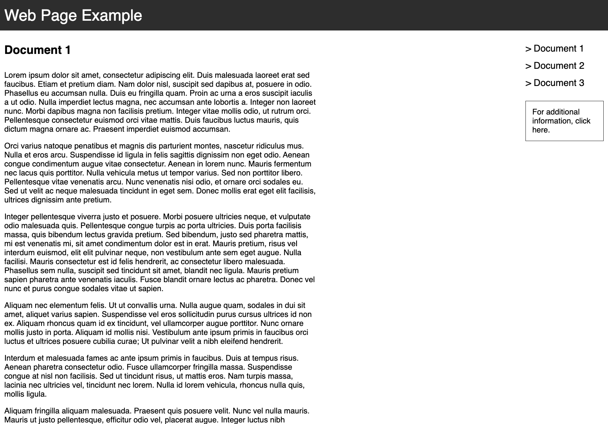
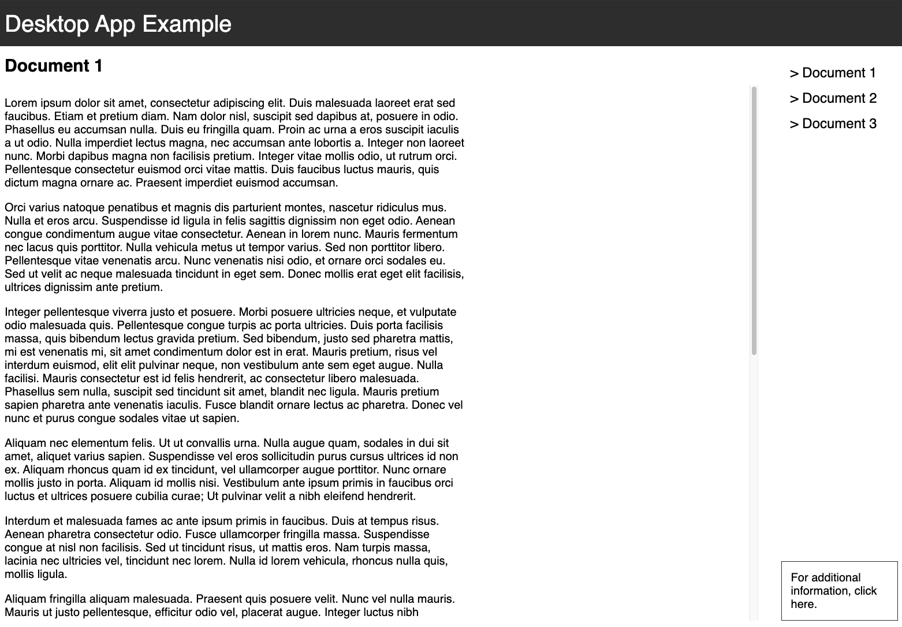

On Web Pages Versus Desktop Apps Design
Jun 20, 2026
I had a realization the other day while designing a simple web app at work. The realization is not profound, nor is it new, but it made me pause and think a bit more deeply about what I was doing. In the end, I went with my original design, but the realization has been noted and I will have to give it some attention in the future. This blog post is the first such attention I'm giving it, while I digest the implications.
The realization is right there in the title. When designing an app, there are two possible principles that I could follow: I can either design the app as though it was an interactive web page, or I could design it like it was a desktop app.
What's the difference? Basically, a web page takes as a starting point the notion of a page, an artifact with a fixed width but an arbitrary height, while a desktop app takes as a starting point a viewport (the app window) with a fixed width and a fixed height.
(I know, I know, it's really a spectrum. I am just identifying the useful end points on that spectrum.)
To illustrate the difference, here's a toy app with a header, a vertical panel with a selection of documents, and an area to show the document selected. The document is generally taller than the available height of the window. In a web page design, the height of the document tends to translate to the available height of the page, and the scroll bar would appear on the page as a whole, scrolling everything up. (Click on the image to navigate to the live page.)

This is a standard web app design you often find online. You can use position: sticky; to control, for example, whether the header or the selector pane on the right remains in view while scrolling. Making everything "sticky" leads to what I call the desktop app design, where every component is fixed within the available width and height of the browser window, and scrolling is restricted within specific components. The window as a whole does not scroll. (Click on the image to navigate to the live page.)

In the end, the functionality is available under both designs, and is not that different. Both app work in the same way, and even implementation-wise, they are not that different. The difference is in the layout, and a perhaps undefinable distinction in the quality of the user experience. And, ultimately, the most subjective of all distinctions: some users will prefer the first, others will prefer the second.
This post was written entirely by a human.
Mon Frère (by Daniel Pennac)
I had a realization the other day while designing a simple web app at work. The realization is not profound, nor is it new, but it made me pause and think a bit more deeply about what I was doing. In the end, I went with my original design, but the realization has been noted and I will have to give it some attention in the future. This blog post is the first such attention I'm giving it, while I digest the implications.
The realization is right there in the title. When designing an app, there are two possible principles that I could follow: I can either design the app as though it was an interactive web page, or I could design it like it was a desktop app.
What's the difference? Basically, a web page takes as a starting point the notion of a page, an artifact with a fixed width but an arbitrary height, while a desktop app takes as a starting point a viewport (the app window) with a fixed width and a fixed height.
(I know, I know, it's really a spectrum. I am just identifying the useful end points on that spectrum.)
To illustrate the difference, here's a toy app with a header, a vertical panel with a selection of documents, and an area to show the document selected. The document is generally taller than the available height of the window. In a web page design, the height of the document tends to translate to the available height of the page, and the scroll bar would appear on the page as a whole, scrolling everything up. (Click on the image to navigate to the live page.)

This is a standard web app design you often find online. You can use position: sticky; to control, for example, whether the header or the selector pane on the right remains in view while scrolling. Making everything "sticky" leads to what I call the desktop app design, where every component is fixed within the available width and height of the browser window, and scrolling is restricted within specific components. The window as a whole does not scroll. (Click on the image to navigate to the live page.)

In the end, the functionality is available under both designs, and is not that different. Both app work in the same way, and even implementation-wise, they are not that different. The difference is in the layout, and a perhaps undefinable distinction in the quality of the user experience. And, ultimately, the most subjective of all distinctions: some users will prefer the first, others will prefer the second.